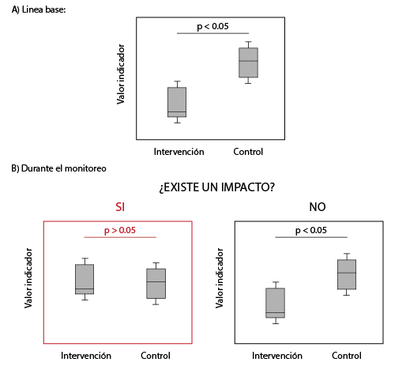

Instrucciones de visualización y explicación de indicadores
1. Instrucciones para visualización de datos
2. Explicación de indicadores
El Convenio sobre la Diversidad Biológica establece en su artículo 14 la necesidad de evaluar los impactos positivos o negativos, generados por proyectos humanos sobre la biodiversidad, para lo cual las estrategias de monitoreo son instrumentos predictivos fundamentales. Además de los indicadores tradicionales basados en vegetación, suelo o presencia de fauna, el monitoreo acústico pasivo ofrece una alternativa útil y costo-efectiva para registrar de manera continua la actividad de organismos vocalmente activos y caracterizar cambios en los paisajes sonoros asociados a la recuperación del hábitat (Sueur & Farina, 2015; Bradfer-Lawrence et al., 2019).
Dichas estrategias de monitoreo requieren indicadores cuidadosamente diseñados que sean cuantificables, replicables, comunicables y de fácil interpretación (Nicholson et al. 2012), con objetivos claros (BIP 2010; Hsu et al. 2013). Estos indicadores deben ser costo-efectivos, sensibles estadísticamente, específicos al cambio de interés, con línea base clara y basados en medidas científicamente válidas de biodiversidad. Sin embargo, cumplir estas características es históricamente complejo debido a la complejidad e incertidumbre de los sistemas biológicos (Feld et al. 2009; Souza et al. 2014; Bigard et al. 2017; da Silva Dias et al. 2017; Clements y Ozgul 2018; de Morais et al. 2018), especialmente por la contexto-dependencia del funcionamiento de los indicadores (Lindemayer et al. 2015). Como solución, se propone utilizar indicadores acústicos con diseño de muestreo comparativo que disminuya la variabilidad mediante mediciones respecto a áreas de referencia no afectadas por intervención humana.
Metodología de muestreo
La evaluación de indicadores se propone mediante un diseño comparativo que contrasta un área de referencia sin intervención (control) con el área proyectada a ser intervenida, asegurando que ambas zonas sean similares en características vegetales y topográficas. Los tipos de coberturas dominantes se clasifican siguiendo categorías como Corine Land Cover CLC y los muestreos se realizan periódicamente, permitiendo la identificación de cambios atribuibles al efecto de la intervención y no a la temporalidad o tendencias globales.
Los datos se contrastan mediante pruebas estadísticas como Rangos de Wilcoxon o T-student, o modelos mixtos lineales generalizados GLMM, concluyendo diferencias significativas (P < 0.05) entre el área de influencia y el control, atribuibles al efecto de la intervención. Para incluir el efecto de la distancia, se utilizan diseños comparativos pareados (ANOVA) o pruebas no paramétricas como la de Friedman cuando no se cumplan los criterios paramétricos.

1. Composición acústica
Definición
Los sonidos producidos por la fauna, son componentes fundamentales de la huella acústica de un sitio determinado. Dicha huella representa rasgos generales de la composición faunística predominante y puede generarse a partir de una representación visual tiempo vs frecuencia, presentando la amplitud promedio de las componentes de frecuencia durante periodos de 24 horas (Figura). En este tipo de representación, la recurrencia de ciertos componentes de frecuencia a lo largo de los días, constituye una fuente de información ideal para realizar una comparación generalizada de la composición acústica faunística entre sitios de muestreo. Adicionalmente, el escalamiento multidimensional no métrico, permite usar dos dimensiones arbitrarias (X y Y), para realizar comparaciones a partir de las distancias en dos dimensiones, calculadas entre las huellas.
Dado que la composición acústica de un sitio de muestreo es altamente sensible a cambios estructurales del entorno. Se propone la distancia media entre las huellas acústicas obtenidas durante el muestreo, como primer indicador de cambio, asociado al proceso de restauración.
Cálculo
Las huellas de cada punto de muestreo se generaron, para cada día, usando el promedio del espectro de potencia de las 0 a las 24 horas (eje X) y analizando frecuencias de 0 a 24 kHz (eje Y). Esta representación genera una matriz A de 24x24, la cual se normaliza respecto a la moda, expresando los valores en decibeles de la siguiente manera 20log10(A/moda(A)) dB y seleccionando los valores de potencia más intensos, mayores al tercer cuartil de la distribución de potencia.
Mediante un escalamiento dimensional no métrico, se genera una representación de todas las huellas en un plano de dos dimensiones, donde la huella acústica de cada día tiene una ubicación determinada en X y Y. La ubicación de las huellas en el plano entre los puntos de intervención y referencia sirve como indicador de cambio.
Interpretación
La diferencia entre las huellas de los sitios de intervención y referencia es un indicador de cambios en la composición acústica de la fauna presente en los sitios. A medida que la restauración produzca que comunidades sonoras similares a los puntos de referencia predominen en los sitios intervenidos, se espera que la distancia entre huellas se reduzca.
Bibliografía
2. Número de picos y saturación espectral
Definición
El número de picos en el espectro de potencia y la cobertura espectral están directamente relacionados con la actividad acústica general de un sitio. Cabe aclarar que estas características no se pueden relacionar directamente con la abundancia o diversidad faunística de un sitio. Sin embargo, pueden usarse para comparar la estructura general de la composición acústica, entre sitios de muestreo. En este modelo comparativo, estas características sirven para comparar la actividad acústica general entre sitios.
Cálculo
El número de picos se calculó a partir del espectro de potencias de cada grabación, contando el promedio de picos de potencia por cada hora de grabación. La cobertura espectral se calculó como el porcentaje de la huella acústica cuyos valores son mayores a 0, es decir, el porcentaje de valores en la huella que pertenecen al tercer cuartil en la distribución de potencia.
Interpretación
Bibliografía
3. Bandas de frecuencia
Definición
La saturación de bandas de frecuencia determinadas está comúnmente relacionada con la actividad acústica de una o un conjunto de especies que emiten sonidos en rangos de frecuencia cercanos. Por lo tanto, la comparación entre bandas de frecuencia, permite estimar cambios entre comunidades de organismos que emiten sonidos en esta banda.
Cálculo
Para comparar bandas de frecuencia se utilizaron ocho coeficientes cepstrales en la escala de Mel, con frecuencias centrales: 1.1, 1.9, 3.1, 4.8, 7.3, 10.9, 16.2 kHz. Estos coeficientes redistribuyen los rangos de frecuencia, dando más detalle a las frecuencias bajas. El valor de cada coeficiente corresponde a una representación de la potencia calculada alrededor de la frecuencia central.
Interpretación
Una comparación inicial de los coeficientes muestra diferencias significativas entre referencias e intervenciones, especialmente en la banda de frecuencia central 1.9 kHz. Esta banda puede servir como indicadora para el proceso de restauración.
Bibliografía
4. Proporción de aves indicadoras
Definición
Las aves son un grupo útil para el seguimiento de procesos de restauración ecológica, debido a que muchas especies responden a cambios en la estructura de la vegetación, la disponibilidad de recursos, la conectividad del paisaje y el grado de intervención del hábitat. En áreas previamente usadas para cultivos de caña, la recuperación de la cobertura vegetal y de la complejidad estructural puede favorecer progresivamente la presencia de especies asociadas a condiciones de hábitat más complejas. Por esta razón, la proporción de aves indicadoras se propone como una medida comparativa para evaluar qué tanto la comunidad de aves detectada en cada sitio refleja una trayectoria deseable de restauración. Esta aproximación es consistente con estudios que han usado monitoreo acústico pasivo para evaluar procesos de restauración y recuperación de comunidades de aves en ecosistemas tropicales, así como con el uso de aves como taxón indicador dentro de análisis acústicos de restauración ecológica.
Cálculo
Se realizó un análisis de las aves presentes en cada sitio usando BirdNET, una herramienta de identificación automática de aves por sonido basada en redes neuronales profundas.
Posteriormente, los cortes acústicos detectados fueron revisados por una experta en aves, quien validó las detecciones y depuró la lista de especies presentes en cada sitio. Esta misma persona definió cuáles de las especies detectadas podrían considerarse aves indicadoras, ya fuera por su condición de especie endémica, casi endémica, por su papel ecológico como dispersora, o por su asociación con condiciones de hábitat relevantes para el proceso de restauración. A partir del total de especies detectadas en cada sitio, se calculó el porcentaje de especies indicadoras mediante la siguiente fórmula:
Porcentaje de aves indicadoras = (número de especies indicadoras detectadas en el sitio / número total de especies de aves detectadas en el sitio) × 100.
En este caso, el indicador se calcula con base en la riqueza de especies detectadas por sitio, no en el número total de detecciones acústicas. Es decir, cada especie validada cuenta una vez dentro del sitio correspondiente.
Interpretación
Un mayor porcentaje de aves indicadoras puede interpretarse como una señal positiva dentro del proceso de restauración, especialmente si los sitios intervenidos presentan valores cercanos a los observados en los sitios de referencia. Esto sugeriría que la composición de aves detectada acústicamente incluye una mayor representación de especies con valor ecológico para la restauración, como especies endémicas, casi endémicas o dispersoras.
Por el contrario, un porcentaje bajo de aves indicadoras puede sugerir que el sitio aún está dominado por especies generalistas o asociadas a ambientes abiertos y simplificados. Sin embargo, este indicador no debe interpretarse como una medida directa de abundancia ni como una evaluación completa de la comunidad de aves, sino como una métrica comparativa que debe analizarse junto con otros indicadores acústicos, la estructura de la vegetación y las condiciones ecológicas de cada sitio.